Original URL: https://epinova.org/f/measuring-ai-beyond-models-the-gaidcef-four-volume-framework
Publication date: undated
Archive note: This is a locally preserved copy of an EPINOVA article originally generated through the GoDaddy blog system.
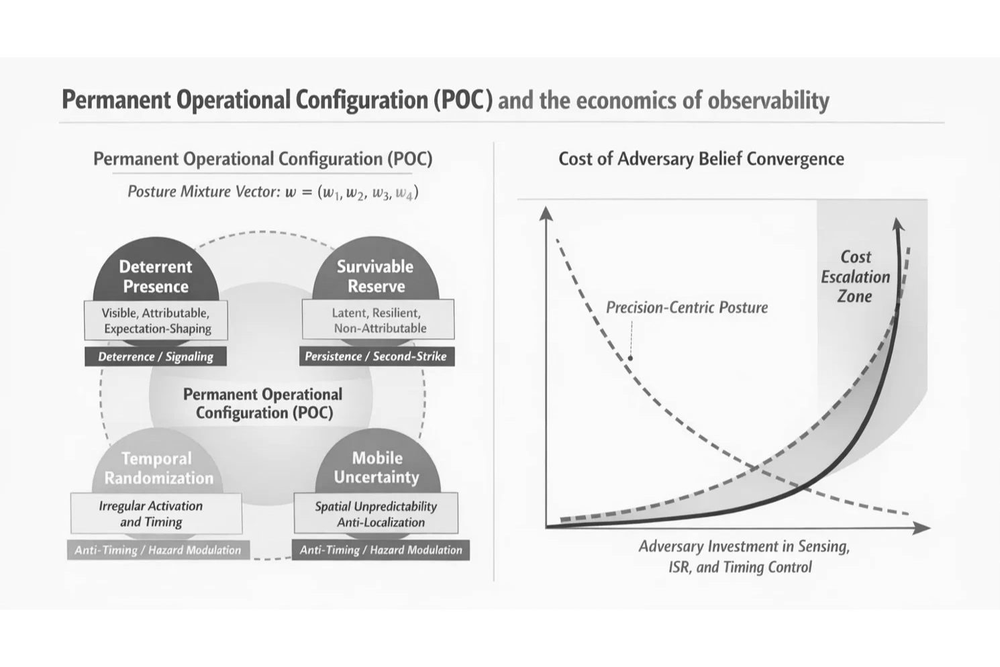
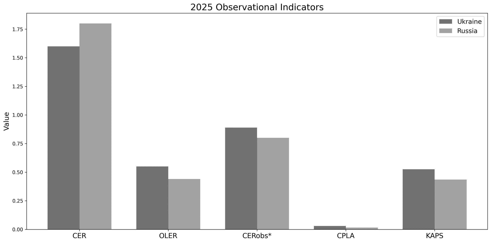
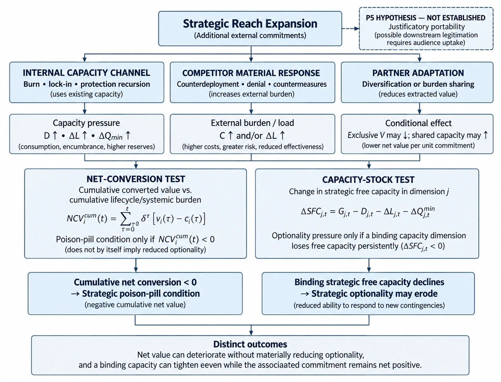
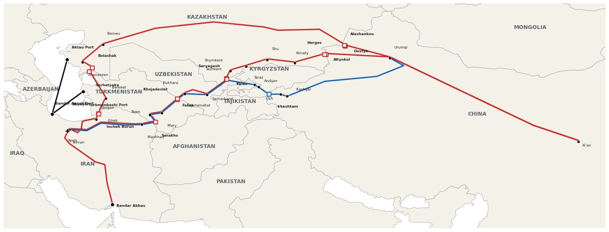
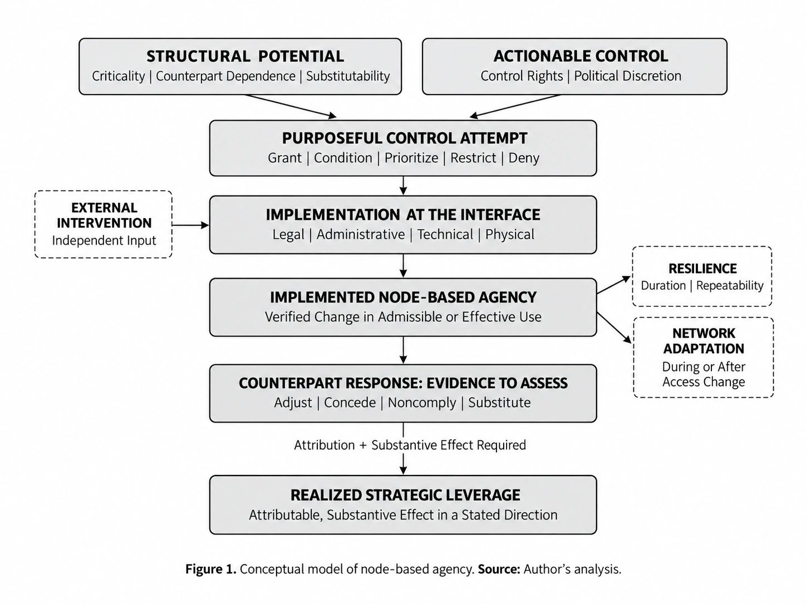
Figure 1. Strategic Reach, Net Conversion, and Strategic Optionality
Working Paper | EPINOVA–2026–WP–F–13
The Limits of Strategic Reach:
Commitment Overhang, Power Conversion, and the Erosion of Strategic Optionality
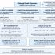
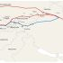
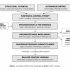
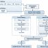
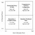
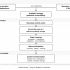
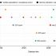
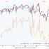
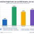
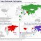
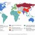
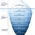
From Connections to Consequences:
Cross-Theater Conflict Coupling and Strategic Capacity in Interconnected Wars
This research report develops Cross-Theater Conflict Coupling (CTCC) as an evidence-based framework for examining how the Russia–Ukraine and U.S.–Israel–Iran conflicts interact through shared military-industrial resources, technological adaptation, operational knowledge, energy systems, and policy-controlled access. Through five conditional propositions and six evidence gates (G1–G6), it analyzes PAC-3 MSE allocation, Shahed–Geran industrial conversion, Ukrainian counter-drone assistance to Gulf states, Russian diesel diplomacy, and international energy buffers. The report further examines asymmetric war termination and its implications for strategic capacity, resource reallocation, and continuing military obligations. It argues that cross-war connections do not automatically produce strategic gains; their consequences depend on verified transmission, recipient-side conversion, institutional constraints, temporal dynamics, and attributable outcomes.
The Reconfiguration of War Power:
Cross-Theater Coupling, Strategic Capacity, and Asymmetric War Termination
This policy brief examines the reconfiguration of strategic capacity across the Russia–Ukraine war and the U.S.–Israel–Iran conflict through the Cross-Theater Conflict Coupling (CTCC) framework. It distinguishes shared exposure from actual transmission, recipient-side conversion, functional consequences, and feedback, using comparative evidence from PAC-3 allocation, Shahed–Geran industrial adaptation, Ukrainian counter-drone expertise in Gulf states, Russian diesel trade, and strategic petroleum reserves. The brief further analyzes how different forms of war termination, including localized ceasefires, nationwide armistices, prolonged confrontation, and hypothetical territorial conquest, may reshape military commitments, industrial bottlenecks, deterrence requirements, and cross-theater resource availability. It argues that reduced fighting in one theater does not automatically generate transferable capacity or strategic gains elsewhere. Instead, the direction and magnitude of cross-theater effects depend on verified resource flows, operational conversion, continuing obligations, adjustment delays, and attributable outcomes.
South Korea’s AI Power Under Uneven Interdependence:
Semiconductor Depth, National Conversion, and the KIC Model-Selection Case
This policy brief examines South Korea’s AI power under uneven technological interdependence, distinguishing specialized technological capacity from nationally usable power, relational boundary control, and operational autonomy. It analyzes Korea’s strengths in advanced semiconductor manufacturing, high-bandwidth memory, public compute, domestic AI models, and industrial applications while identifying persistent dependencies on externally controlled technological interfaces. The Korea Investment Corporation (KIC) serves as a diagnostic case of mixed-origin institutional AI adoption, involving Chinese-developed Qwen3 and BGE-M3 alongside U.S.-developed models. The brief argues that model adoption does not itself establish foreign control, durable dependence, or systemic influence. It concludes that South Korea’s long-term AI power depends on converting specialized resources into sustainable national capabilities, exercising effective control at consequential interfaces, and preserving credible functional alternatives under disruption.
ASEAN in the Emerging AI Power Order:
Distributed National Nodes, Overlapping Technological Systems, and Strategic Autonomy
This policy brief examines ASEAN’s place in the emerging AI power order as a distributed regional coordination and overlap environment rather than a unified AI power. It distinguishes AI National Power at the member-state level, AI Boundary Power at specific controller–target–interface relations, Boundary Autonomy as the ability to preserve functions through credible alternatives, and Systemic Influence as a separate outcome requiring persistent, sufficiently broad, and credibly attributable effects. The brief compares the differentiated functional roles of ASEAN’s eleven members, analyzes aggregation, interoperability, option-set expansion, and mediation as regional mechanisms, and examines overlap among U.S., Chinese, domestic, Japanese, Korean, European, Indian, and Gulf-linked technological systems. It concludes that ASEAN’s strategic relevance lies in interoperable pluralism: preserving multiple workable connections, strengthening nationally controlled interfaces, and converting coordination and investment into operational interoperability, credible alternatives, and durable local capability. ASEAN in the Emerging AI Power …
The Limits of Strategic Reach:
Commitment Overhang, Power Conversion, and the Erosion of Strategic Optionality
This working paper develops a diagnostic framework for analyzing the limits of strategic reach through commitment overhang, strategic free capacity, and strategic optionality. It argues that great-power sustainability cannot be assessed through fiscal affordability or aggregate national power alone because strategic commitments draw on partially nonfungible resources and impose different temporal burdens. The paper distinguishes burn commitments that consume current capability from lock-in commitments that encumber future capacity, and integrates protection recursion, regeneration bottlenecks, portfolio interaction, competitive expansion feedback, control-induced diversification, and justificatory portability. The 2026 U.S.–Israel–Iran conflict illustrates high-burn depletion and restoration liabilities; Greenland illustrates prospective lock-in; and Canada–EU cooperation illustrates diversification intent. The paper concludes that strategic reach can continue to expand while discretionary capacity for future contingencies contracts, and that negative net conversion, declining free capacity, and loss of strategic optionality should be treated as distinct analytical outcomes.
Beyond Maritime Substitution:
Rail, Trucking, and the Emerging Architecture of Iran’s Overland Supply Resilience
This policy brief examines Iran’s emerging overland supply architecture under sustained maritime constraint. It argues that Iran’s logistics adaptation is moving beyond discrete alternative corridors toward a functionally differentiated rail–road system linking Chinese gateways, Central Asian transit networks, Iranian border crossings, and domestic distribution. Rail and trucking are treated as complementary rather than interchangeable modes: rail supports scheduled, containerized, heavier-volume flows, while trucking adds flexibility for urgent, high-value, smaller-lot, and final-distribution cargo. The brief analyzes China–Central Asia rail data, Horgos and Alashankou gateway patterns, China–Iran block-train services, TIR and trucking evidence, APRIN Dry Port specifications, and reported Iranian border, fuel, and driver constraints. It concludes that the central issue is capacity conversion: overland resilience depends on how much nominal gateway and corridor access becomes reliable delivered supply inside Iran, not on route count alone.
The U.S.–Israel–Iran Conflict on Day 200
Strategic Objectives, Systemic Costs, and the Rewiring of Networked War
This research report provides a strategic and systemic assessment of the U.S.–Israel–Iran conflict on Day 200. It examines how the war evolved from direct military confrontation into a broader contest involving maritime access, logistics, energy, financial markets, infrastructure, technological adaptation, alliance relationships, and cross-theater connectivity. Rather than treating battlefield activity as the sole measure of conflict intensity, the report analyzes how military operations interact with the wider systems that sustain military capability, transmit disruption, and shape strategic pressure. It combines public-source reporting, author-compiled datasets, and MCCM v2.3.4 analytical coding, while distinguishing publicly confirmed evidence, reported or contested claims, and author-derived analytical estimates. The report concludes that by Day 200 the conflict is best understood as escalation without demonstrated systemic collapse: high systemic pressure persists across an interconnected conflict system, while key functions continue through adaptation, redundancy, and partial recovery.
Beyond Buffer-State Logic:
Node-Based Agency in the Caspian–Middle East Conflict Network
This conference paper, presented at the 1st RCASBC International Conference 2026, hosted by the Hong Kong Research Center for Asian Studies–Bangladesh Center (RCASBC) and the Department of International Relations, University of Chittagong, develops node-based agency as a framework for explaining how middle and small states can convert control over strategic connections into bounded influence under networked conflict. Moving beyond traditional buffer-state logic, it distinguishes structural centrality from actual control, implementation, counterpart effects, bargaining returns, and resilience. Through comparative analysis of Caspian logistics, Gulf basing and airspace access, and Ukraine’s transfer of counter-drone expertise, the paper shows that strategic importance alone does not constitute agency; meaningful leverage requires verified control over a consequential interface and observable effects on another actor’s options or behavior.
Global Artificial Intelligence Development and Competitiveness Assessment Framework (GAID&CEF)
EPINOVA LLC is pleased to announce the publication of the complete four-volume Global Artificial Intelligence Development and Competitiveness Assessment Framework (GAID&CEF) series.
The GAID&CEF project was developed as a systematic framework for examining artificial intelligence development and competitiveness across national and regional AI ecosystems. Rather than reducing AI capability to model performance, investment levels, or a small number of headline indicators, the Framework examines the broader combination of infrastructure, resources, algorithms, applications, governance, human capital, and emerging technologies that shape the development and long-term competitiveness of AI ecosystems.
The four-volume structure reflects this multidimensional approach. Each volume addresses a distinct part of the AI development system while contributing to an integrated analytical framework.
The Machine Audience of War:
AI-Generated Video, Narrative Occupancy, and Machine-Mediated Information Competition in the U.S.–Israel–Iran Conflict
This policy brief examines AI-generated video in the U.S.–Israel–Iran conflict through the concepts of narrative occupancy, machine addressability, and machine audience. It argues that synthetic wartime media should not be assessed only by whether it persuades or deceives human audiences. As search systems, retrieval pipelines, large language models, and AI agents increasingly mediate digital information, synthetic content may remain discoverable and retrievable beyond its period of direct human attention. The brief analyzes three illustrative cases: Iranian state-linked synthetic mobilization, President Donald Trump’s Kharg Island post as synthetic battlefield representation, and Prime Minister Benjamin Netanyahu’s AI-generated campaign video as relational fabrication. It concludes that the central policy challenge is not only detecting synthetic media, but preserving distinctions among what occurred, what was claimed, what was depicted, and what was generated across machine-mediated information systems.
The Decoupling of Geographic and Strategic Distance:
Homeland Vulnerability, Effect Projection, and System Defense in Networked Warfare
This working paper develops a framework for analyzing the partial decoupling of geographic distance from strategic distance in networked warfare. It argues that an actor may lack the capacity to deliver sustained conventional firepower against a distant homeland while retaining the ability to generate strategically consequential effects through interconnected military, logistical, industrial, digital, financial, energy, maritime, and informational systems. The paper introduces strategic distance, systemic connectivity, effect projection, the system homeland, and system defense as related concepts. Using Iran’s confrontation with the United States as an illustrative case, it shows how maritime uncertainty, cyber and informational pressure, threats to external operational nodes, and cumulative demands on logistics, inventories, alliances, markets, and political attention can generate homeland-relevant effects without direct territorial penetration.
India’s AI Power in a Distributed and Uneven Technological Order:
Boundary Control, Strategic Autonomy, and Cognitive Security
This research report examines India’s emerging AI power through the interaction of usable national capacity, technological dependence, boundary control, strategic autonomy, and cognitive security. It argues that India’s position is best understood as a distributed and vertically uneven mixed-control system: strong software capacity, digital public infrastructure, multilingual public technology, a large technical workforce, expanding compute access, and globally distributed technical networks coexist with dependence on externally controlled upstream technologies. The report distinguishes access from mobilizable capability, territorial presence from control, boundary power from boundary autonomy, and systemic influence from narrower bilateral effects. It concludes that India’s long-term AI power will depend on conversion, substitutability, resilient public infrastructure, selective boundary control, and the ability to preserve agency without full technological autarky.
Artificial intelligence is no longer only a question of model performance. It is increasingly a question of competitiveness, governance, talent, infrastructure, risk, institutional capacity, and power.
The Global Artificial Intelligence Development and Competitiveness Assessment Framework, known as GAID&CEF, is a systematic four-volume reference series developed to understand, measure, and assess global AI development, AI competitiveness, governance capacity, institutional readiness, and AI power.
AI is often evaluated through isolated indicators such as model benchmarks, company valuations, startup activity, adoption rates, computing capacity, or individual governance principles.
These indicators are important, but they do not fully explain how artificial intelligence capabilities are developed, deployed, governed, sustained, and translated into economic, institutional, and strategic competitiveness.
GAID&CEF addresses this gap by connecting the major dimensions that shape AI development and long-term competitiveness.
The framework examines:
By integrating these dimensions, GAID&CEF provides a broader analytical foundation for evaluating how countries, institutions, and organizations develop and use artificial intelligence.
The GAID&CEF framework is designed to move AI assessment beyond fragmented metrics.
It examines not only what AI models can do, but also whether AI capabilities can be deployed at scale, supported by infrastructure, governed effectively, strengthened by talent, integrated into institutions, and converted into durable economic and strategic value.
This makes the framework relevant to the assessment of:
GAID&CEF provides a structured approach for understanding the relationship between technological capability, institutional capacity, competitiveness, governance, and power.
The Global Artificial Intelligence Development and Competitiveness Assessment Framework is organized into four complementary volumes.
Volume I: Foundations, Algorithms, and Applications
Volume I examines the conceptual foundations, algorithms, platforms, and applications through which artificial intelligence systems are developed and deployed.
It establishes the technological and analytical foundations required to understand the broader AI ecosystem.
Volume II: Competitiveness, Governance, and Risk
Volume II examines how AI capability is translated into economic and strategic competitiveness.
It also analyzes the role of governance, standards, regulation, institutional capacity, security, and risk management in shaping AI development.
Volume III: Talent and Workforce Capacity
Volume III focuses on the human foundations of AI development.
It examines education, research capacity, technical expertise, workforce readiness, talent systems, and the institutional conditions required to build and sustain AI capabilities.
Volume IV: Frontier Indicators and Outlook
Volume IV examines emerging indicators, future capabilities, comparative assessment methods, strategic trends, and the evolving global AI landscape.
It focuses on how new developments may influence future AI competitiveness, governance, institutional readiness, and power.
Together, the four volumes provide an integrated reference system for assessing artificial intelligence at the technological, institutional, national, and international levels.
The GAID&CEF series is designed for professionals and institutions involved in artificial intelligence policy, strategy, governance, research, and assessment.
Its intended audiences include:
The series can support policy development, academic research, international comparison, strategic planning, institutional assessment, and evidence-based decision-making.
Model performance remains an important component of artificial intelligence development, but it is only one part of a much larger system.
Durable AI competitiveness depends on whether technological capabilities can be supported by infrastructure, deployed in real-world environments, integrated into economic and institutional systems, governed responsibly, and sustained by skilled talent.
AI power therefore emerges from the interaction of technology, deployment, governance, economic capacity, talent, institutions, and strategic readiness.
GAID&CEF was developed to examine these relationships systematically.
It is not simply a collection of AI indicators. It is a comprehensive framework for understanding how AI capability is created, how it becomes competitiveness, and how competitiveness can be transformed into lasting institutional and national power.
The Global Artificial Intelligence Development and Competitiveness Assessment Framework is published by EPINOVA PRESS.
Author
Shaoyuan Wu, PhD, LLM, MS
Founder, EPINOVA LLC
Director, Global AI Governance and Policy Research Center
Share this post:
Copyright © 2025–2026 EPINOVA LLC
Email: contactus@epinova.org Phone: +1 678-667-8001
All Rights Reserved.